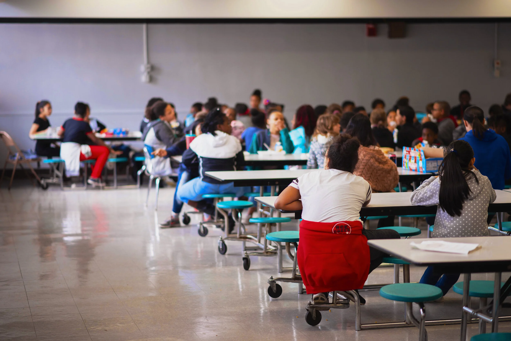

Equitable access
Maximizing equitable access to school meals for every student.
Learn more →
A STATEWIDE FARM TO SCHOOL COALITION
A network of partners and advocates working so every student has equitable access to healthy school meals, locally grown food, and hands-on food education.
We help schools and districts give students healthier meals, more local food, and richer food education.
WHAT WE'RE WORKING FOR
Maximizing equitable access to school meals for every student.
Learn more →More locally grown and produced food, and meals that are culturally connected to diverse students.
Learn more →Engaging, garden-based, experiential learning for all students.
Learn more →OUR CURRENT PRIORITY
We're working to pass An Act establishing the Massachusetts Farm to School Program (S.311 / H.565), which would codify the MA FRESH grant program and create a local food incentive within the Department of Elementary and Secondary Education. The bill passed the Joint Committee on Education unanimously and is now in Ways & Means.
BY THE NUMBERS
OUR COALITION
Massachusetts Food for Massachusetts Kids is a collaborative effort of organizations and individuals who believe every student deserves healthy meals and food education at school. Coordinated by Massachusetts Farm to School and FoodCorps MA.
Your voice makes this real. Contact your legislators, submit testimony, or join our monthly coalition meeting (first Thursday, 2pm).